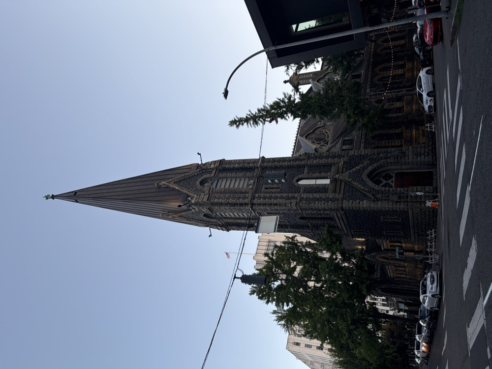
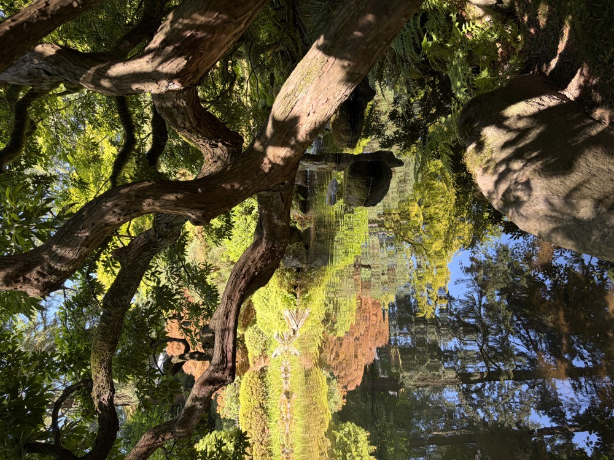
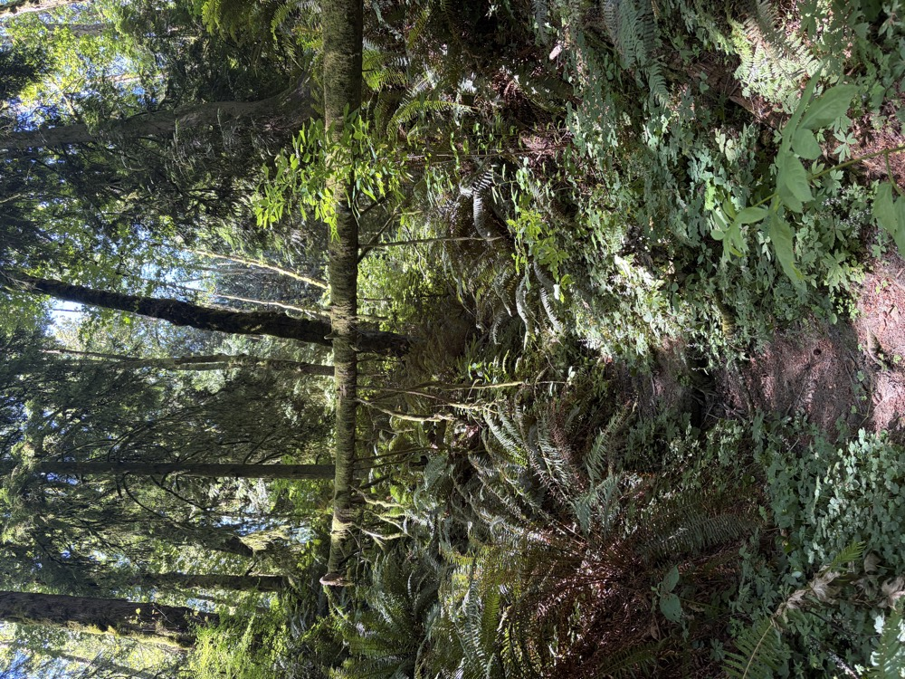
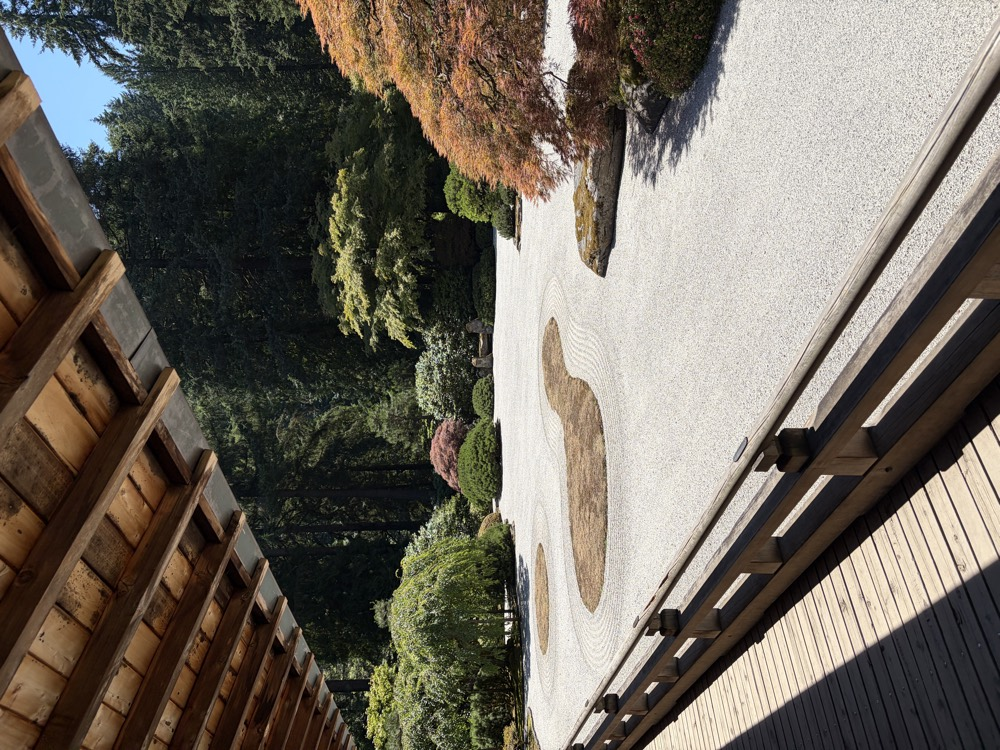
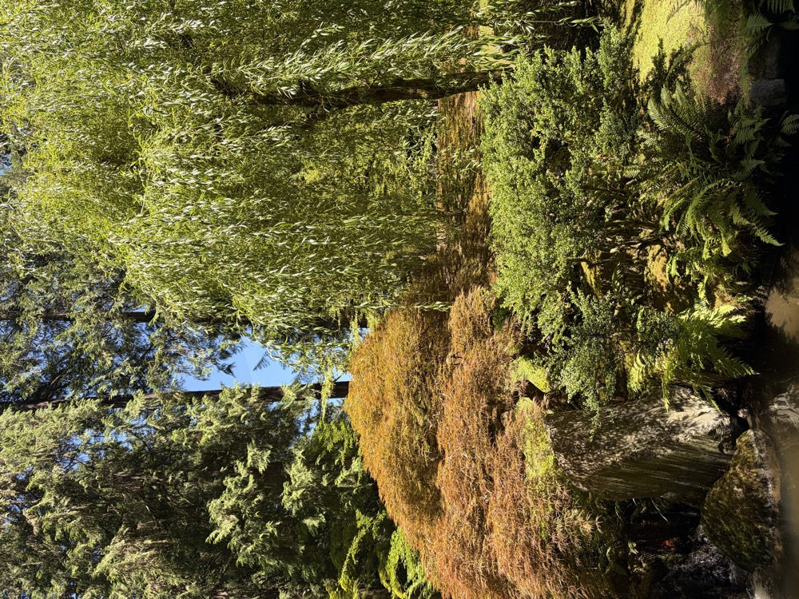

Your Name
Independent designer & developer
I make simple, useful websites for independent businesses and people with good work to show.
My process combines clear thinking, visual direction, and front-end code—from the first idea to a website that is ready for customers.
Available for select web projects.
Work
-
Chiara Elaine
A fashion styling and creative portfolio centered on visual storytelling, wardrobe, and brand communication.
-
Beverly Corpuz
A visual artist’s portfolio for creative work, moving image, and everyday observations.
Experience
Independent designer & developer
Tucson, AZDigital designer for local businesses and growing brands
RemoteCreative generalist across web, identity, and product work
Replace this
Thoughts
Photography
Personal studies in light, texture, and ordinary places.

01
02
03
04
05Toolbox
Curated findsWhat shapes how I think and build
Stack